Do you like Creepers and want a custom cape? Then this pack is made for you!
It adds over 20 Capes in many different colors and styles.
You can choose your favorite cape in the subpacks menu in the resource pack settings.
Here are some examples of the capes with all the black capes and some of the white ones:
Black Cape + White Creeper
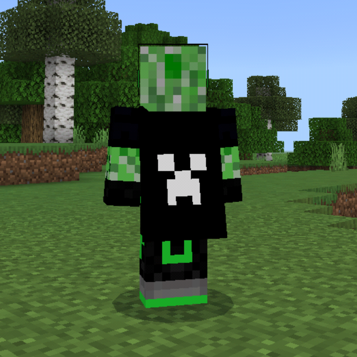White Cape + Green Creeper
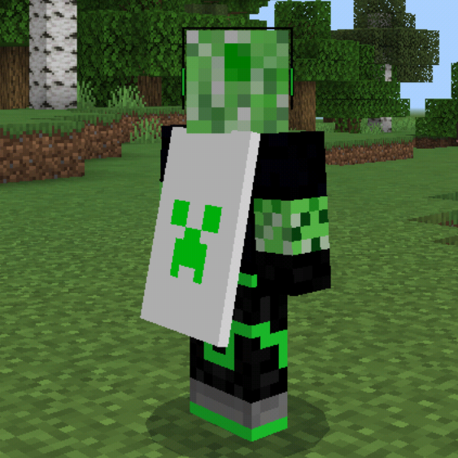White Cape + Blue Creeper
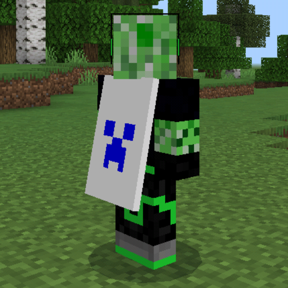Black Cape + Rainbow Creeper
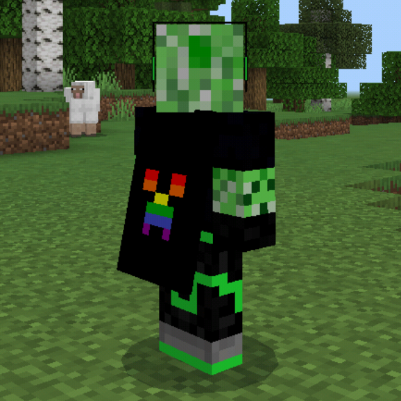Black Cape + Pink Creeper
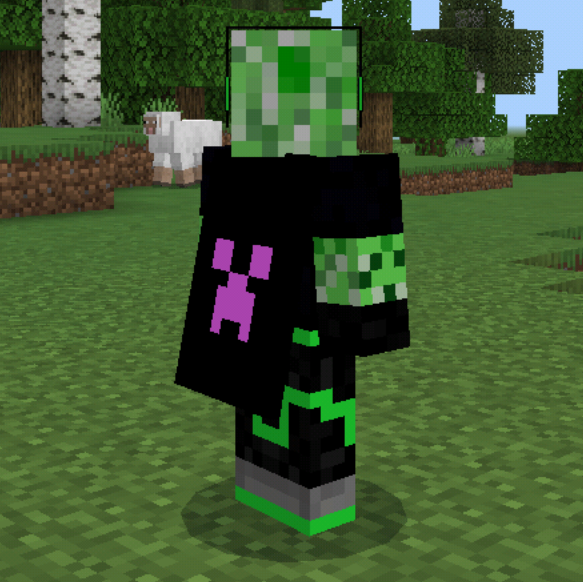Black Cape + Purple Creeper
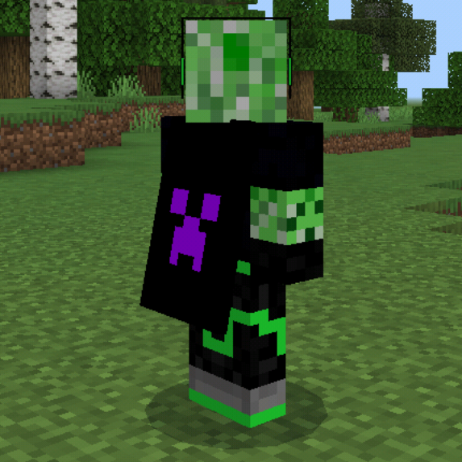Black Cape + Blue Creeper

Black Cape + Lightblue Creeper
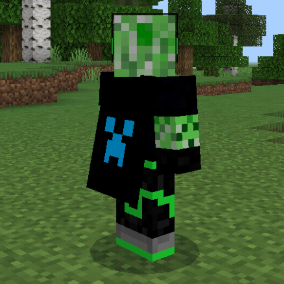Black Cape + Green Creeper
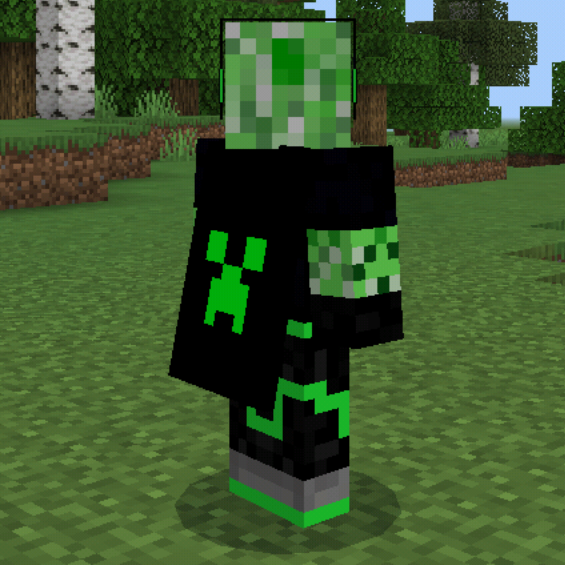Black Cape + Yellow Creeper
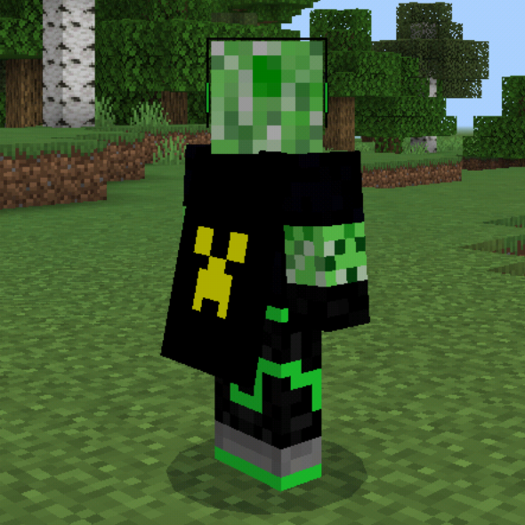Black Cape + Orange Creeper
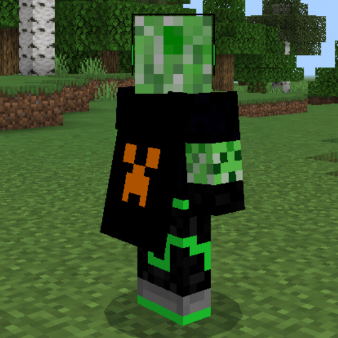Black Cape + Red Creeper
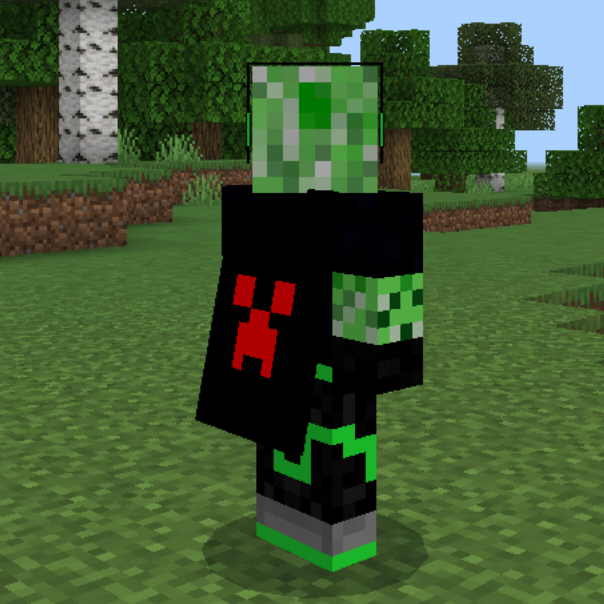Have fun!